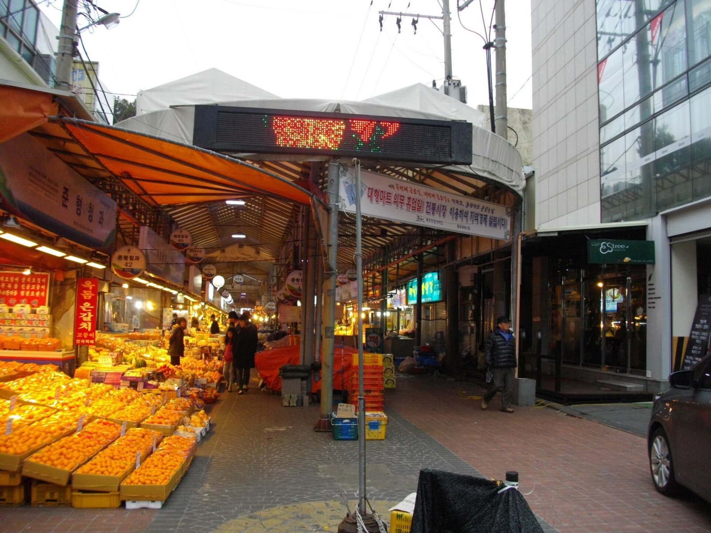
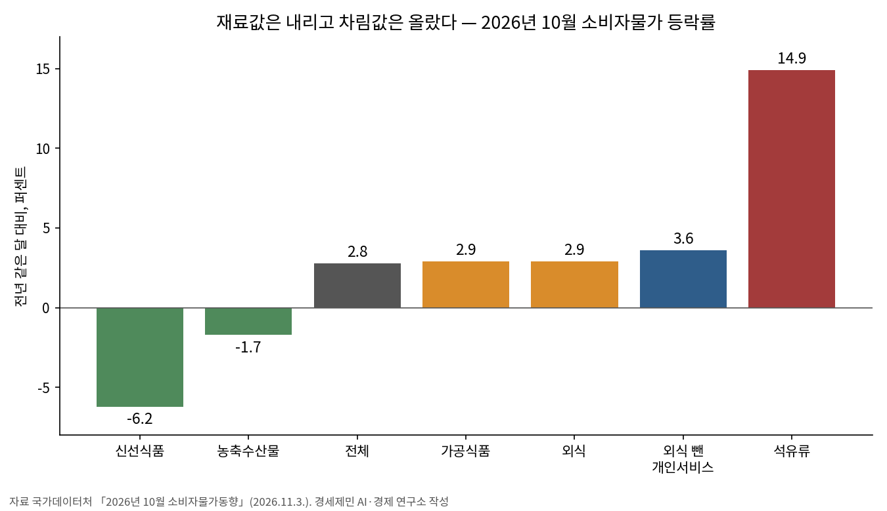
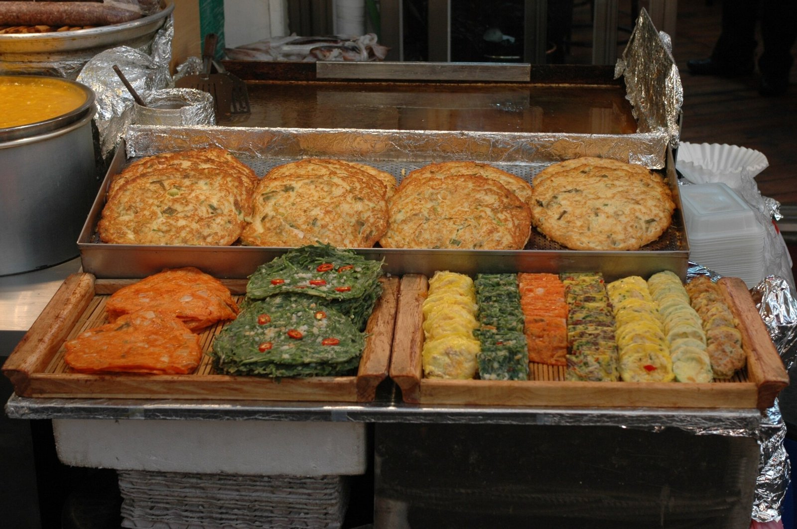
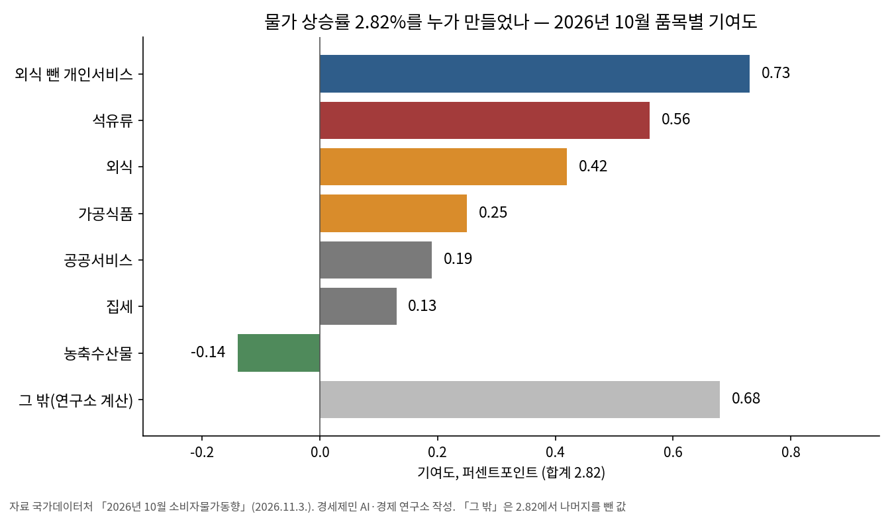
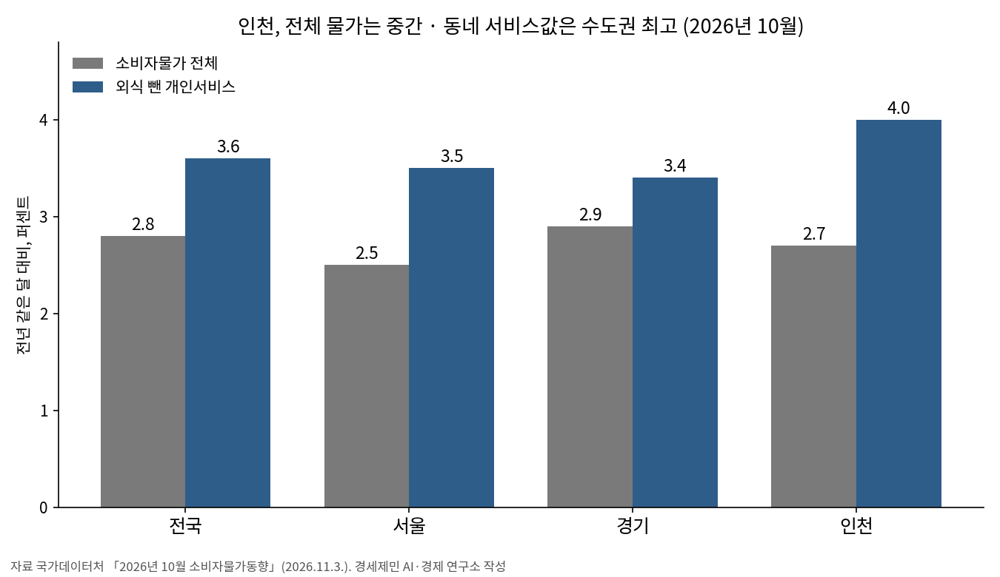

[물가] 장바구니 재료값은 내리는데 차림값은 오른다
10월 소비자물가 2.8%…신선식품 6.2% 내릴 때 외식·가공식품은 2.9% 올라
기름값 한 묶음이 물가 상승의 5분의 1, 생산자물가와의 틈은 4.8%포인트
인천은 2.7%로 국내 평균보다 낮지만 외식 뺀 개인서비스는 4.0%로 수도권 최고
AI경제저널=김갑봉 기자 | 10월 소비자물가는 1년 전보다 2.8% 올랐다. 9월 2.9%보다 0.1%포인트 낮다. 상추는 44.3%, 오이는 39.5% 내렸다. 숫자만 보면 장바구니가 가벼워졌다.
같은 달 외식은 2.9%, 가공식품도 2.9% 올랐다. 빵은 5.9%, 즉석식품은 12.4% 뛰었다. 밭에서 오는 재료값은 내리는데 식탁에 오르는 차림값은 오른다. 이 글은 그 틈을 센다.

물가는 0.1%포인트 내렸고 근원물가는 올랐다
국가데이터처가 3일 낸 10월 소비자물가지수는 120.73(2020년=100)이다. 전월보다 0.2%, 1년 전보다 2.8% 올랐다. 1~10월 누계 상승률은 2.7%다.
식료품과 에너지를 뺀 근원물가는 전월보다 0.4% 올랐다. 1년 전과 견주면 2.8%로 9월 2.8%와 같다. 전체 물가가 내린 몫은 농산물이 거의 다 만들었다.
농축수산물은 1년 전보다 1.7% 내렸다. 농산물은 7.5%, 그 가운데 채소류는 11.2% 떨어졌다. 날씨에 따라 크게 움직이는 신선식품지수는 6.2% 내렸다.
밭에서 오는 값만 내렸다.
축산물은 4.8%, 수산물은 5.4% 올랐다. 국산 쇠고기가 9.1%, 고등어가 9.3%, 갈치가 11.9% 올랐다. 공업제품은 4.4%, 서비스는 2.7% 올랐다.
물가의 바닥은 내려오지 않았다.
한국은행도 같은 쪽을 본다. 10월 22일 「경제상황 평가」에서 소비자물가가 누적된 비용압력의 전이와 수요압력 확대로 상당기간 목표수준을 웃돌 것이라고 내다봤다.
한국은행은 같은 날 기준금리를 연 3.00%로 묶었다. 물가 2.8%는 금리를 다시 올릴지 가늠하는 숫자다. 이 글의 물음은 셋이다. 무엇이 물가를 끌어올리나, 그 짐은 누구에게 가나, 그것이 경제에 무엇을 뜻하나다.
자료 다섯, 가공 지표 다섯
자료는 국가데이터처 「2026년 10월 소비자물가동향」 원문이 중심이다. 품목성질별 등락률과 기여도, 시도별 공공·개인서비스 표를 읽었다. 9월 인천 값은 9월 동향 원문으로 맞췄다.
공급 쪽은 한국은행 「9월 생산자물가지수」와 「9월 수출입물가지수」로 본다. 임금은 고용노동부 「9월 사업체노동력조사」의 8월 임금으로 본다. 모두 기관 원문이다.
가공 지표 다섯은 연구소가 원문 숫자로 셈만 했다. 추정은 넣지 않았다. 첫째 차림·재료 격차는 외식 상승률에서 농축수산물 상승률을 뺀 값이다. 2.9−(−1.7)로 4.6%포인트다.
둘째 석유류 기여 몫은 석유류 기여도 0.56%포인트를 전체 상승률 2.82%로 나눈 값이다. 19.9%다. 셋째 서비스 기여 몫은 1.47÷2.82로 52.1%다.
넷째 공급단 틈은 9월 생산자물가 상승률 7.7%에서 9월 소비자물가 2.9%를 뺀 값이다. 4.8%포인트다. 다섯째 물가 뺀 임금은 (1.039÷1.031)−1로 셈해 0.8%다.
기여도는 품목 하나가 전체 상승률을 몇 %포인트 끌어올렸는지 보여 주는 값이다. 가중치는 1000원을 쓸 때 그 품목에 쓰는 몫이다. 석유류 가중치는 1000 가운데 46.6이다.

재료값과 차림값이 4.6%포인트 벌어졌다
외식 2.9%와 농축수산물 −1.7%의 차이가 4.6%포인트다. 재료값이 내린 만큼 식당 밥값이 따라 내리지 않는다. 생선회(외식)는 5.9% 올랐다.
경제학은 이 현상에 이름을 붙였다. 샘 펠츠먼 시카고대 교수는 2000년 「가격은 내릴 때보다 오를 때 빠르다」에서 셋 가운데 둘이 넘는 시장에서 비용이 오를 때 값이 더 빨리 움직인다고 밝혔다.
마이어와 폰 크라몬-타우바델은 2004년 비대칭 가격전이 연구를 정리했다. 유통 단계의 시장지배력과 가격을 고치는 데 드는 비용이 원인으로 꼽힌다. 내린 원가는 소비자에게 늦게 닿는다.
한국 자료도 같다. 석준호·정대희·문한필(2023)은 비선형 자기회귀시차 모형으로 환율과 식품물가를 견줬다. 코로나19 뒤 환율 1% 상승은 식품물가를 0.5% 올렸다.
논문은 환율이 1% 내릴 때도 식품물가가 0.29% 오른다고 추정했다. 하방경직성이다. 한국은행은 10월 결정문에서 환율이 상당폭 내렸다고 했다. 그 몫이 식탁에 닿을지 볼 일이다.
가공식품과 외식은 일하는 사람의 하루 밥값이다. 외식은 기여도 0.42%포인트, 가공식품은 0.25%포인트다. 둘을 합치면 10월 물가 상승의 4분의 1에 가깝다.
정부는 재료값 쪽을 더 낮춘다. 재정경제부는 3일 물가관계차관회의에서 역대 최대인 약 640억 원 규모 김장대책을 내놨다. 농축산물 할인에 440억 원, 수산물 「대한민국 수산대전 김장철 특별전」에 200억 원이다.
주요 김장재료는 최대 40%, 새우젓 같은 양념과 수산물은 최대 50%까지 깎아 준다. 정부는 10월 하순 4인 가족 김장비용을 약 23만8천 원으로 잡았다. 지난해보다 4.2% 낮다.
김장은 재료를 사서 집에서 담그는 일이라 재료값 하락과 할인이 바로 닿는다. 식당 밥값과 가공식품 값에는 이 할인이 닿지 않는다. 재료를 사 손수 차리는 집과 사 먹는 집의 체감 물가가 갈린다.
재료값 하락은 농가 소득을 깎고 차림값 상승은 가계 지갑을 깎는다.

기름값 한 묶음이 물가의 5분의 1
석유류는 1년 전보다 14.9% 올랐다. 경유가 19.7%, 휘발유가 11.6% 뛰었다. 바구니 무게는 4.66%인데 물가 상승의 19.9%를 만들었다. 무게의 네 배가 넘는 힘이다.
정부는 석유 최고가격제가 10월 물가 상승률을 약 0.8%포인트 낮춘 것으로 추정했다. 값을 묶는 제도 아래서도 석유류는 두 자릿수로 올랐다.

서비스는 물가 상승의 52.1%를 만들었다. 외식을 뺀 개인서비스가 3.6% 올라 0.73%포인트를 보탰다. 보험서비스료가 13.4%, 해외단체여행비가 11.5%, 공동주택관리비가 3.1% 올랐다.
공급 쪽 압력은 더 크다. 한국은행이 낸 9월 생산자물가는 1년 전보다 7.7% 올랐다. 수입물가는 국제유가 상승 등으로 원화 기준 17.6% 올랐다. 같은 달 소비자물가는 2.9%다.
생산자물가와 소비자물가 사이 틈이 4.8%포인트다. 기업이 아직 값에 다 싣지 않은 원가가 그만큼 쌓였다는 뜻일 수 있다. 한국은행이 말한 누적된 비용압력이 이 틈이다.
틈이 좁혀지는 길은 둘이다. 원가가 내려와 생산자물가가 꺾이거나, 쌓인 원가가 소비자 값으로 넘어오거나다. 앞의 비대칭 연구는 뒤쪽이 더 흔하다고 말한다.
임금은 그 속도를 따라가지 못한다. 고용노동부 조사로 8월 1인당 임금총액은 409만3000원으로 3.9% 올랐다. 8월 물가 3.1%를 빼면 연구소 계산으로 0.8%다.
7월 실질임금은 0.3% 줄었다. 한 달은 늘고 한 달은 줄었다. 물가가 3% 안팎에 머무는 한 일하는 사람의 구매력은 제자리를 맴돈다.
물가 2.8%가 경제에 말하는 것
물가 상승률은 돈의 값이 떨어지는 속도다. 1년 전 1000만 원에 사던 물건을 사려면 지금 28만 원이 더 든다. 한국은행 물가 목표 2%를 0.8%포인트 웃돈다. 숫자 하나보다 그 속이 더 많은 것을 말한다.
10월에 내린 것은 날씨를 타는 신선식품이다. 날씨가 바뀌면 값은 되돌아온다. 근원물가는 2.8%에서 움직이지 않았다. 오름세가 몇몇 품목을 넘어 경제 전반에 자리를 잡았다는 신호다. 전체 물가 0.1%포인트 하락은 착시에 가깝다.
서비스가 상승의 절반을 넘긴 점도 같은 쪽을 가리킨다. 서비스 값의 큰 몫은 사람 손에 드는 비용, 곧 인건비다. 한번 오른 서비스 값은 잘 내려오지 않는다. 물가가 끈적해지고 있다는 뜻이다. 내려오는 데 시간이 걸린다.
가계에 물가는 구매력의 문제다. 명목임금이 3.9% 올라도 물가를 빼면 0.8%가 남는다. 쓸 수 있는 돈이 제자리면 소비가 늘기 어렵다. 소비가 움츠러들면 내수가 살아나기 어렵다. 물가가 성장의 발목을 잡는 길이다.
기업에 물가는 선택의 문제다. 생산자물가와 소비자물가의 틈 4.8%포인트는 기업이 원가 상승분을 아직 이윤에서 떠안고 있다는 신호일 수 있다. 계속 떠안으면 이윤이 줄어 투자와 고용이 움츠러든다. 값에 실으면 물가가 다시 오른다.
통화정책에 물가는 시간의 문제다. 기준금리 3.00%에서 물가 2.8%를 빼면 물가를 감안한 실질 기준금리는 0.2%포인트 남짓이다(연구소 계산). 돈줄을 죄는 힘이 세지 않다는 뜻이다. 한국은행이 금리를 내릴 여지는 좁고 대출 이자 짐은 그만큼 오래 간다.
분배에 물가는 누가 잃느냐의 문제다. 물가가 오르면 빚진 사람의 빚 무게는 가벼워지고, 예금과 연금, 고정 급여로 사는 사람의 몫은 줄어든다. 소비 바구니가 다른 만큼 같은 2.8%도 계층마다 다르게 닿는다.
석유 최고가격제는 숨은 물가를 보여 준다. 정부 추정대로라면 제도가 없었을 때 10월 물가는 3.6% 안팎이 된다. 눌러 둔 값은 사라지지 않고 공급자나 재정 같은 다른 주머니로 옮겨 간다. 제도가 풀리면 그 몫이 물가로 돌아올 수 있다.
10월 물가는 겉으로 숨을 고르고 속으로는 버티고 있다. 지표가 내려도 가계의 지갑, 기업의 원가, 중앙은행의 금리는 아직 오름세의 시간 위에 있다.
인천은 국내 평균보다 낮지만 동네 서비스값은 수도권 최고
인천 10월 소비자물가는 1년 전보다 2.7% 올랐다. 국내 2.8%보다 0.1%포인트 낮다. 9월에는 2.6%로 대구와 함께 17개 시도에서 가장 낮았다.
국내 물가가 0.1%포인트 내릴 때 인천은 0.1%포인트 올랐다. 서울은 2.5%, 경기는 2.9%다. 인천은 수도권에서 가운데 자리다. 전체 물가만 보면 인천 살림은 무난하다.
외식을 뺀 개인서비스는 다르다. 인천은 4.0%로 서울 3.5%, 경기 3.4%보다 높다. 국내 3.6%도 웃돈다. 수도권 셋 가운데 가장 높다. 부산과 같고 울산·충북 4.5%보다 낮다.

인천 외식은 2.7%로 국내 2.9%보다 낮다. 공공서비스는 1.4%로 국내 1.7%보다 낮다. 나라와 시가 정하는 요금은 국내 평균보다 덜 올랐다.
인천 가계의 짐은 밥값보다 외식 밖의 생활 서비스에 더 실려 있다. 국내 전체로 보면 이 갈래는 보험서비스료와 공동주택관리비가 끌어올렸다.
후생경제학으로 보면 같은 물가도 가계마다 무게가 다르다. 그자비에 자라벨 런던정경대 교수는 2021년 소득 계층마다 소비 바구니가 달라 물가 상승률이 다르게 닿는 「물가 불평등」을 정리했다.
인천시는 누리집에 주간 물가조사 결과를 올린다. 지금 올라 있는 마지막 결과는 9월 24일 「9월 넷째 주」다. 장바구니를 재는 지역의 눈이 한 달 넘게 비어 있다.
경세제민 AI·경제 연구소는 셋을 제언한다. 국가데이터처는 시도별 외식·가공식품·석유류 지수를 보도자료에 함께 실어 주기 바란다. 지금 국가데이터처 보도자료의 시도 표는 총지수와 공공·개인서비스까지다.
인천시는 주간 물가조사를 다시 올리고, 외식 메뉴 가격과 재료값을 나란히 공개해야 한다. 정부는 유통 단계별 가격 전이를 품목별로 점검해 원가 하락이 소비자에게 닿는지 살펴야 한다.
이 글의 판단은 10월 생산자물가로 시험한다. 생산자물가와 소비자물가의 틈이 줄면서 소비자물가가 2%대 초반으로 내려가면, 연구소는 「쌓인 원가가 넘어온다」는 판단을 거둔다.
국가데이터처는 2025년 기준으로 바꾼 소비자물가지수를 12월에 공표할 예정이다. 그때 2020년 기준 수치는 바뀔 수 있다. 연구소는 새 기준 지수로 이 글의 수를 다시 센다.
다음 주 4번 대주제는 대출 이자와 가계부채다. 기준금리 3.00%가 물가 2.8% 앞에서 가계의 이자 짐을 얼마나 키우는지를 센다. 물가와 금리는 한 지갑에서 나간다.
10월 물가는 내렸지만 내린 것은 밭에서 오는 값뿐이었다. 식당 밥값과 동네 서비스값, 기름값은 올랐고 공장 문 앞의 원가는 그보다 더 올랐다. 균형경제학으로 보면 원가 하락이 식탁까지 닿게 하는 유통 혁신이 서민의 실질소득을 지키고 유효수요를 살린다.
참고문헌
- Peltzman, S., 「Prices Rise Faster than They Fall」, 『Journal of Political Economy』 108(3), 2000, 466~502쪽, https://ideas.repec.org/a/ucp/jpolec/v108y2000i3p466-502.html
- Meyer, J. and S. von Cramon-Taubadel, 「Asymmetric Price Transmission: A Survey」, 『Journal of Agricultural Economics』 55(3), 2004, 581~611쪽, https://ideas.repec.org/a/bla/jageco/v55y2004i3p581-611.html
- Jaravel, X., 「Inflation Inequality: Measurement, Causes, and Policy Implications」, 『Annual Review of Economics』 13, 2021, 599~629쪽, https://ideas.repec.org/a/anr/reveco/v13y2021p599-629.html
- 석준호·정대희·문한필, 「COVID-19 전후 환율이 식품 물가에 미치는 비대칭성에 대한 연구」, 『농촌경제』 제46권 제3호, 한국농촌경제연구원, 2023.9., 129~148쪽, https://repository.krei.re.kr/bitstream/2018.oak/30445/1/RE46-3-06.pdf
- 국가데이터처 경제동향통계심의관 물가동향과, "2026년 10월 소비자물가동향", 2026.11.3., https://mods.go.kr/board.es?mid=a10301010000&bid=213&act=view&list_no=447801
- 재정경제부 등 관계부처 합동, "10월 소비자물가는 2.8% 기록, 김장재료 수급안정 위해 역대 최대규모 김장대책(640억원) 시행(11월 물가관계차관회의)", 2026.11.3., https://www.korea.kr/briefing/pressReleaseView.do?newsId=156787669
- 국가데이터처, "2026년 9월 소비자물가동향", 2026.10.2., https://mods.go.kr/board.es?mid=a10301010000&bid=213&list_no=447322&act=view
- 한국은행 경제통계1국 물가통계팀, "2026년 9월 생산자물가지수(잠정)", 2026.10.21., KDI 경제교육·정보센터 게재, https://eiec.kdi.re.kr/policy/materialView.do?num=288362
- 한국은행 경제통계1국 물가통계팀, "2026년 9월 수출입물가지수 및 무역지수(잠정)", 2026.10.16., KDI 경제교육·정보센터 게재, https://eiec.kdi.re.kr/policy/materialView.do?num=288195
- 한국은행 조사국 경제모형실, "경제상황 평가(2026년 10월)", 2026.10.22., KDI 경제교육·정보센터 게재, https://eiec.kdi.re.kr/policy/materialView.do?num=288398
- 한국은행 통화정책국 정책총괄팀, "통화정책방향 : 기준금리 3.00% 유지", 2026.10.22., KDI 경제교육·정보센터 게재, https://eiec.kdi.re.kr/policy/materialView.do?num=288401
- 고용노동부 노동시장조사과, "2026년 9월 사업체노동력조사 및 2026년 4월 산업소분류별 고용통계 결과", 2026.10.29., KDI 경제교육·정보센터 게재, https://eiec.kdi.re.kr/policy/materialView.do?num=288733
- 고용노동부 노동시장조사과, "2026년 8월 사업체노동력조사 및 2026년 4월 시도별 임금·근로시간조사 결과", 2026.9.30., KDI 경제교육·정보센터 게재, https://eiec.kdi.re.kr/policy/materialView.do?num=287627
- 인천광역시 경제정책과, "2026년 9월 넷째 주 물가조사 결과", 2026.9.24., https://www.incheon.go.kr/eco/ECO020501/3089033
사진·도표 출처
- [사진1] Abasaa, "Dongmun Market 01.JPG", 위키미디어 공용, 퍼블릭 도메인, 2014.2.28. 촬영, https://commons.wikimedia.org/wiki/File:Dongmun_Market_01.JPG
- [사진2] Pfc. Bo Park(2ID PAO, US Army), "Korean pancakes and pan-fried foods at Gwangjang Market.jpg", 위키미디어 공용, 퍼블릭 도메인(미국 연방정부 저작물), 2008.7.10. 촬영, https://commons.wikimedia.org/wiki/File:Korean_pancakes_and_pan-fried_foods_at_Gwangjang_Market.jpg
- [사진3] Hankook12, "Filling station in South Korea.jpg", 위키미디어 공용, CC0, 2024.2.9. 촬영, https://commons.wikimedia.org/wiki/File:Filling_station_in_South_Korea.jpg
- [도표1] 경세제민 AI·경제 연구소 작성, 자료 국가데이터처 「2026년 10월 소비자물가동향」(2026.11.3.)
- [도표2] 경세제민 AI·경제 연구소 작성, 자료 같음. 「그 밖」은 연구소 계산
- [도표3] 경세제민 AI·경제 연구소 작성, 자료 같음
관련기사
- [일자리·임금] 가계소득 늘어난 몫의 69%는 나랏돈이었다
- 인천 10월 소비자물가 2.7% 올라…외식 뺀 개인서비스는 4.0%로 수도권 최고
- [거시경제] 이윤은 18.5% 늘고 임금은 1.9% 늘었다
- [가계부채 브리핑] 가계대출 9개월 만에 2조2000억원 감소, 주택담보대출은 3조3000억원 늘어
저작권자 © AI경제저널 무단전재 및 재배포, AI학습 및 활용 금지